|
Chris Lu
I am a third-year DPhil student at the University of Oxford, where I am
advised by Professor Jakob
Foerster at FLAIR. My work focuses on applying
evolution-inspired techniques to meta-learning and multi-agent
reinforcement learning. I'm currently interning at Sakana.ai as a
research scientist. In the summer of 2022 I interned at DeepMind as a research scientist.
Previously, I worked as a researcher at Covariant.ai.
I'm currently on the job market for positions starting this fall.
Google Scholar
/
Twitter /
Github /
LinkedIn
|
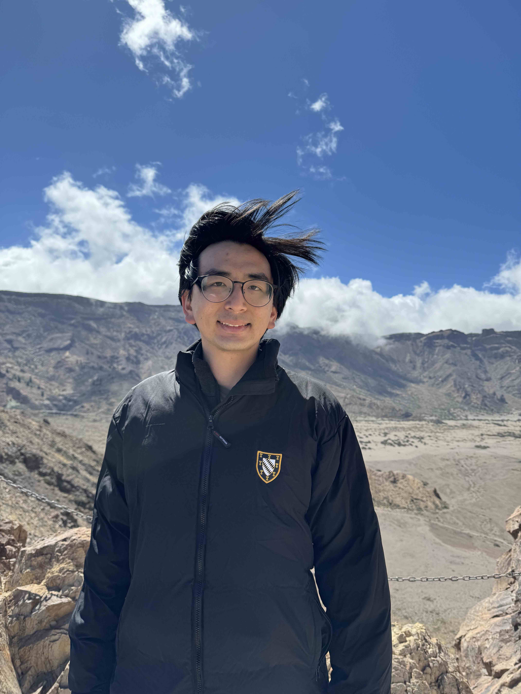
|
|
News
- (06/24) Matthew T. Jackson and I were interviewed on
the AutoML podcast!
- (06/2024) We released a blog post on DiscoPOP, our paper on using LLM's to invent better
algorithms to train LLM's.
- (05/2024) We received a Gemma Academic Program grant, which I co-wrote on behalf of the lab.
- (05/2024) I started an internship at Sakana AI as a
Research Scientist!
- (01/2024) I gave talks invited on JaxMARL and PureJaxRL at the Berkeley Multi-Agent Learning Seminar
and the BeNeRL seminar series.
-
(11/2023) We released a blog post on JaxMARL, our JAX-based Multi-Agent RL library.
-
(04/2023) I released a blog post on PureJaxRL, a JAX-based RL library that
massively speeds up RL training.
- (03/2023) I gave talks on evolutionary meta-learning at the UMD
Multi-Agent Reinforcement Learning Reading Group, the AI4ABM Reading Group, and the Learning in Foundation
Environments (LIFE) Reading Group!
- (09/2022) We received a GoodAI
grant, which I co-wrote on behalf of the lab
- (07/2022) I gave in-person talks on three of our papers at the main conference and several
workshops at ICML 2022 in Baltimore!
[Model-Free Opponent Shaping, Discovered Policy Optimisation, and Adversarial Cheap Talk]
- (06/2022) I started an internship at DeepMind as a
Research Scientist on the Discovery Team!
- (05/2022) We received an Oracle for Research Grant, which I co-wrote on behalf of the lab
- (10/2021) I started my DPhil at Oxford with FLAIR
Blog Posts
|
|
Publications (representative papers are highlighted)
|
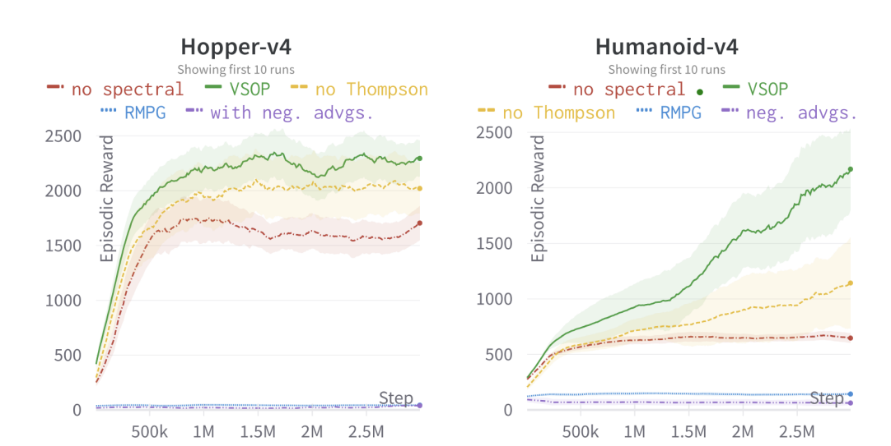 |
ReLU to the Rescue: Improve Your On-Policy Actor-Critic with Positive Advantages
Andrew Jesson, Chris Lu, Gunshi Gupta, Angelos Filos, Jakob Nicolaus Foerster, Yarin Gal
ICML 2024
|
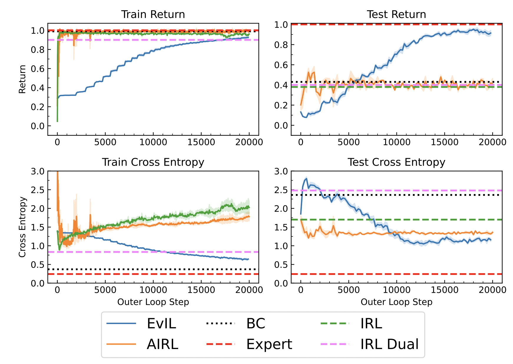 |
EvIL: Evolution Strategies for Generalisable Imitation Learning
Silvia Sapora, Gokul Swamy, Chris Lu, Yee Whye Teh, Jakob Nicolaus Foerster
ICML 2024
Also at the NeurIPS 2023 Robot Learning Workshop
|
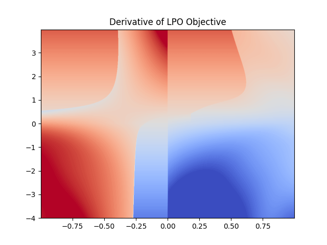 |
Discovering Temporally-Aware Reinforcement Learning Algorithms
Matthew Jackson*, Chris Lu*, Louis Kirsch, Robert Lange, Shimon Whiteson, Jakob Foerster
*Equal Contribution
ICLR 2024
Also at the NeurIPS 2023 Workshop on Agent Learning in Open-Endedness
|
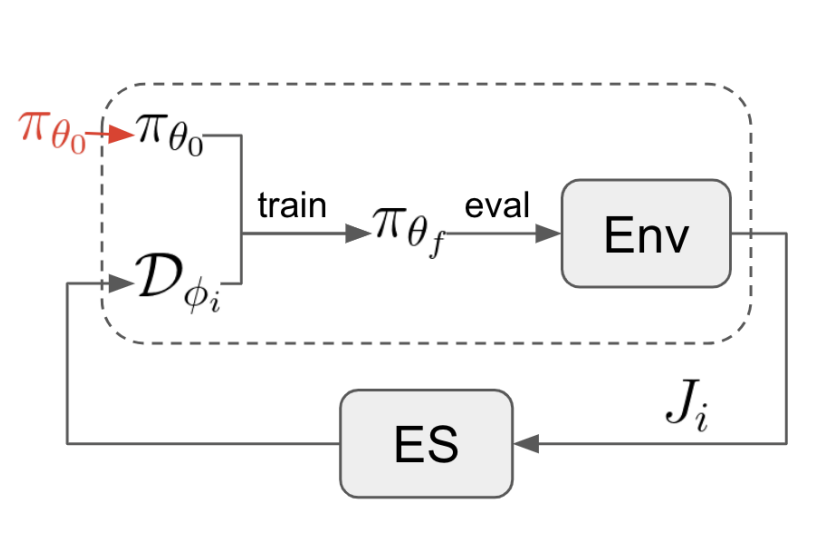 |
Behaviour Distillation
Andrei Lupu, Chris Lu, Jarek Luca Liesen, Robert Tjarko Lange, Jakob Foerster
ICLR 2024
|
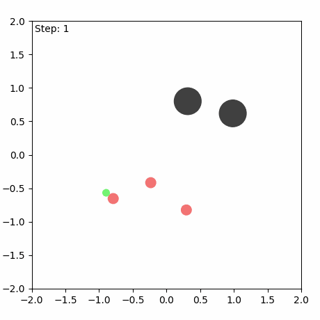 |
JaxMARL: Multi-Agent RL Environments in JAX
Alexander Rutherford*†, Benjamin Ellis*†, Matteo Gallici*†, Jonathan Cook*, Andrei Lupu*, Gardar
Ingvarsson*, Timon Willi*, Akbir Khan, Christian Schroeder de Witt, Alexandra Souly, Saptarashmi
Bandyopadhyay, Mikayel Samvelyan, Minqi Jiang, Robert Tjarko Lange, Shimon Whiteson, Bruno Lacerda,
Nick Hawes, Tim Rocktaschel, Chris Lu*†, Jakob Nicolaus Foerster
†Equal Contribution, *Core Contribution
AAMAS 2024
Also at the NeurIPS 2023 Workshop on Agent Learning in Open-Endedness
|
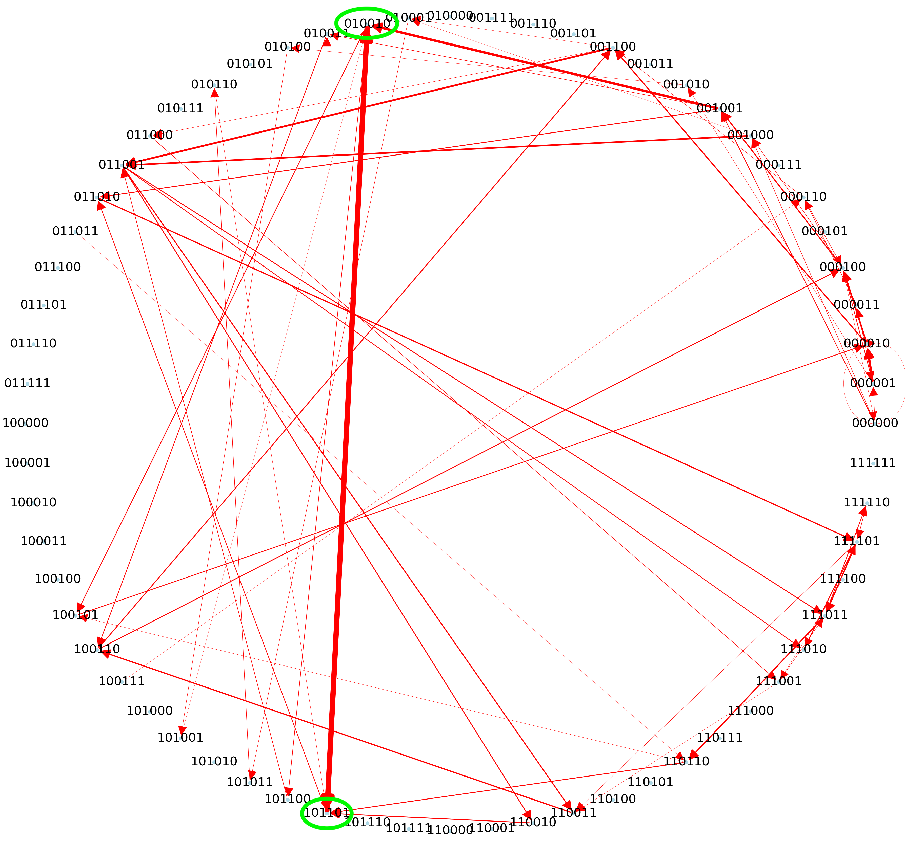 |
Analyzing the Sample Complexity of Model-Free Opponent Shaping
Kitty Fung*, Qizhen Zhang*, Chris Lu, Jia Wan, Timon Willi, Jakob Foerster
*Equal Contribution
AAMAS 2024 (Oral)
Also at the ICML 2023 Workshop on New Frontiers in Learning, Control, and Dynamical Systems
|
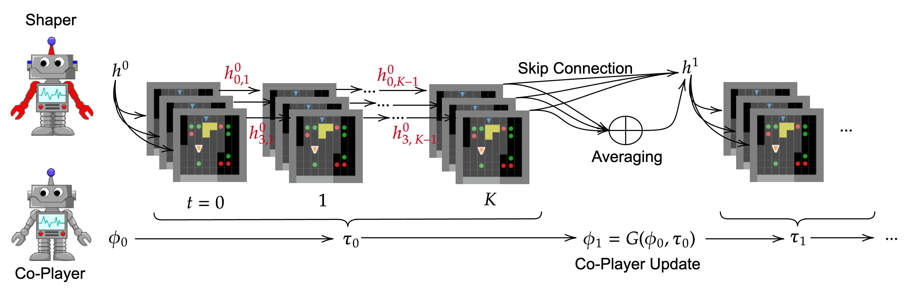 |
Scaling Opponent Shaping to High Dimensional Games
Akbir Khan*, Timon Willi*, Newton Kwan*, Andrea Tachetti, Chris Lu, Edward Grefenstette, Tim
Rocktäschel, Jakob Foerster
*Equal Contribution
AAMAS 2024 (Oral)
Also at the Games, Agents, and Incentives Workshop at AAMAS 2023
|
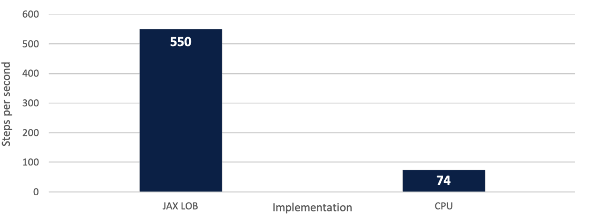 |
JAX-LOB: A GPU-Accelerated limit order book simulator to unlock large scale reinforcement
learning for trading
Sascha Frey*, Kang Li*, Peer Nagy*, Silvia Sapora, Chris Lu, Stefan Zohren, Jakob Foerster,
Anisoara Calinescu
*Equal Contribution
International Conference on AI in Finance 2023 (Best Academic Paper Award)
|
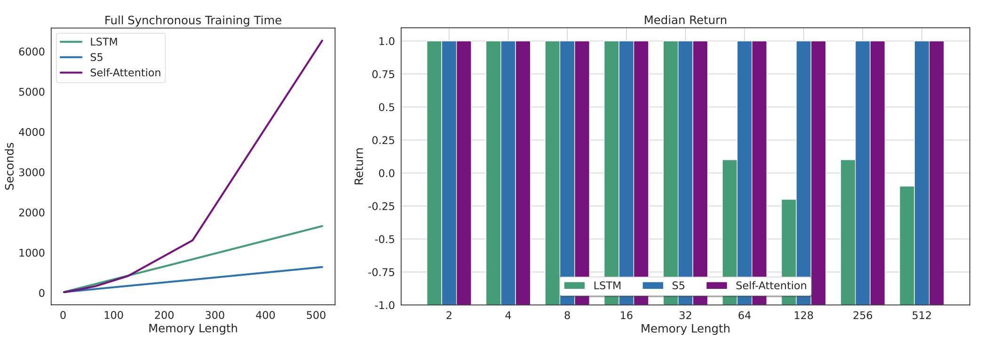 |
Structured State Space Models for In-Context Reinforcement Learning
Chris Lu, Yannick Schroecker, Albert Gu, Emilio Parisotto, Jakob Foerster, Satinder Singh,
Feryal Behbahani
NeurIPS 2023
Also at the Workshop on New Frontiers in Learning, Control, and Dynamical Systems @ ICML
2023
|
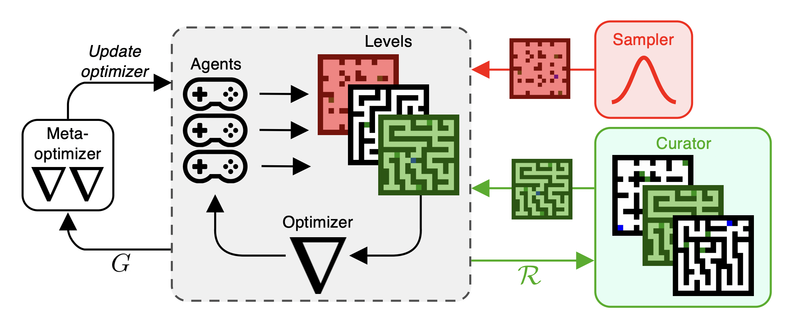 |
Discovering General Reinforcement Learning Algorithms with Adversarial Environment Design
Matthew Thomas Jackson, Minqi Jiang, Jack Parker-Holder, Risto Vuorio, Chris Lu, Gregory
Farquhar, Shimon Whiteson, Jakob Nicolaus Foerster
NeurIPS 2023
|
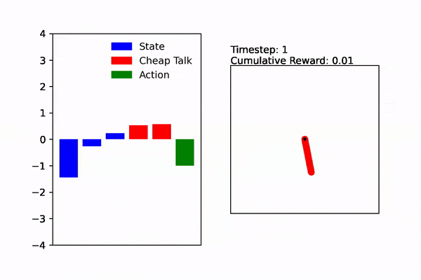 |
Adversarial Cheap Talk
Chris Lu, Timon Willi, Alistair Letcher, Jakob Foerster
ICML 2023
Also at the Workshop on Machine Learning for Cybersecurity @ ICML 2022 (Spotlight)
|
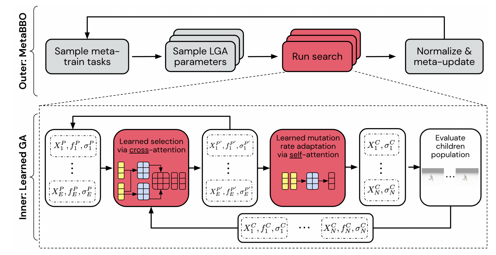 |
Discovering Attention-Based Genetic Algorithms via Meta-Black-Box Optimization
Robert Tjarko Lange, Tom Schaul, Yutian Chen, Chris Lu, Tom Zahavy, Valentin Dallibard,
Sebastian Flennerhag
GECCO 2023
|
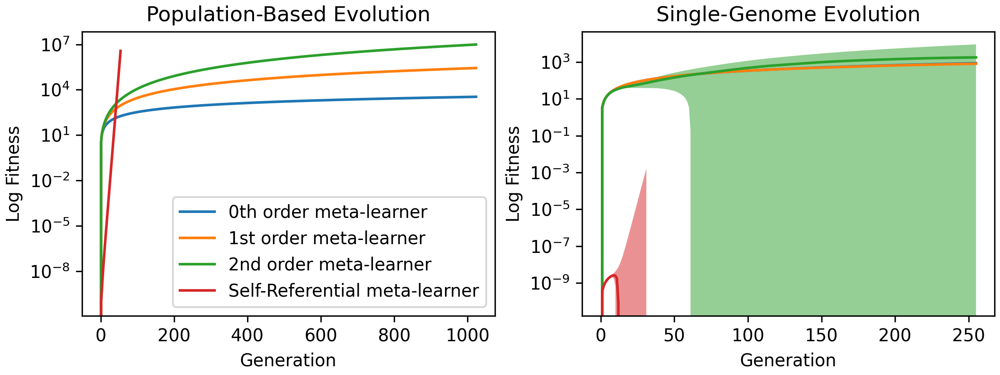 |
Arbitrary Order Meta-Learning with Simple Population-Based Evolution
Chris Lu, Sebastian Towers, Jakob Foerster
ALIFE 2023 (Oral)
|
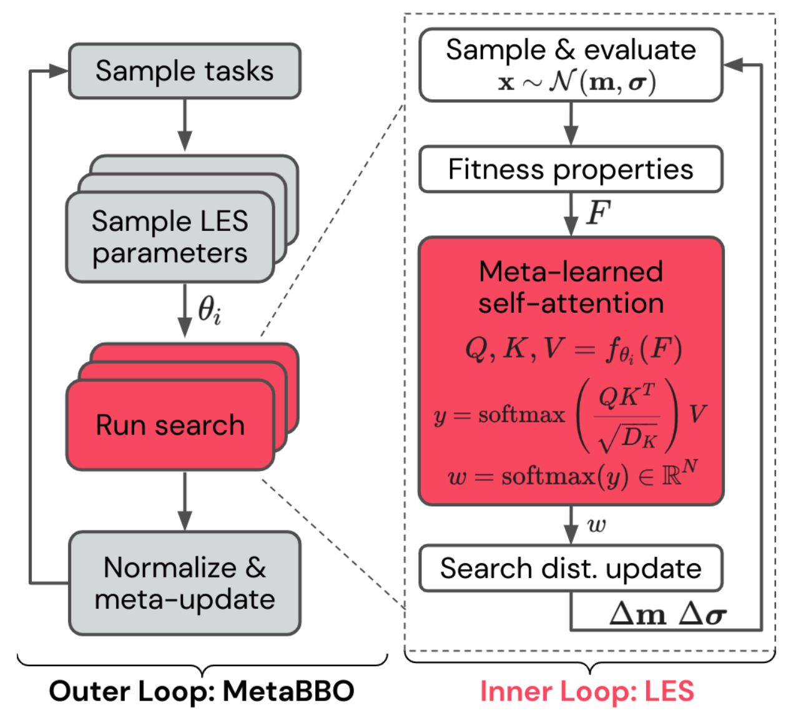 |
Discovering Evolution Strategies via Meta-Black-Box Optimization
Robert Tjarko Lange, Tom Schaul, Yutian Chen, Tom Zahavy, Valentin Dallibard, Chris Lu,
Satinder Singh, Sebastian Flennerhag
ICLR 2023
|
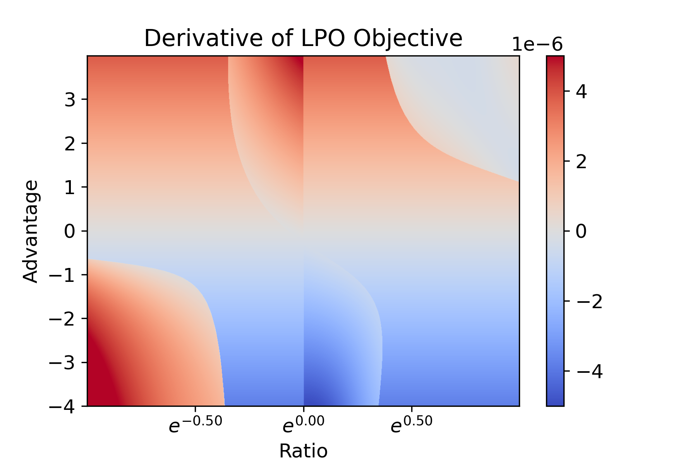 |
Discovered Policy Optimisation
Chris Lu*, Jakub Grudzien Kuba*, Alistair Letcher, Luke Metz, Christian Schroeder de Witt,
Jakob Foerster
*Equal Contribution
NeurIPS 2022
Also at the Decision Awareness in Reinforcement Learning Workshop @ ICML 2022
(Oral)
|
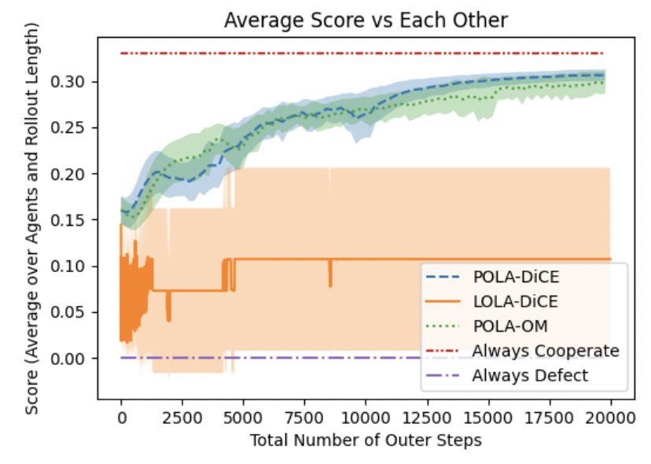 |
Proximal Learning With Opponent-Learning Awareness
Stephen Zhao, Chris Lu, Roger Baker Grosse, Jakob Foerster
NeurIPS 2022
|
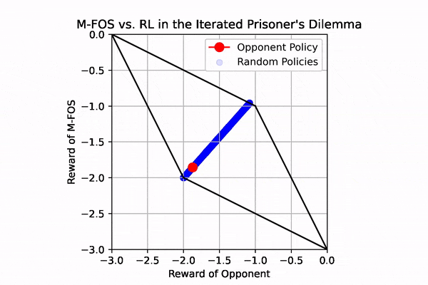 |
Model-Free Opponent Shaping
Chris Lu, Timon Willi, Christian Schroeder de Witt, Jakob Foerster
ICML 2022 (Spotlight)
Also at the ICLR 2022 Workshop on Gamification and Multiagent Solutions (Spotlight)
|
|
Centralized Model and Exploration Policy for Multi-Agent RL
Qizhen Zhang, Chris Lu, Animesh Garg, Jakob Foerster
AAMAS 2022 (Oral Presentation)
|
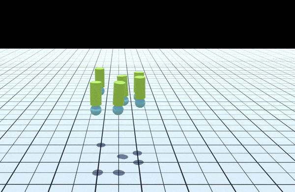 |
Learning to Control Self-Assembling Morphologies
Deepak Pathak*, Chris Lu*, Trevor Darrell, Phillip Isola, Alexei A. Efros
*Equal Contribution
NeurIPS 2019 (Spotlight)
Winner of Virtual Creatures Competition (link)
|
|
Preprints and Workshop Papers
|
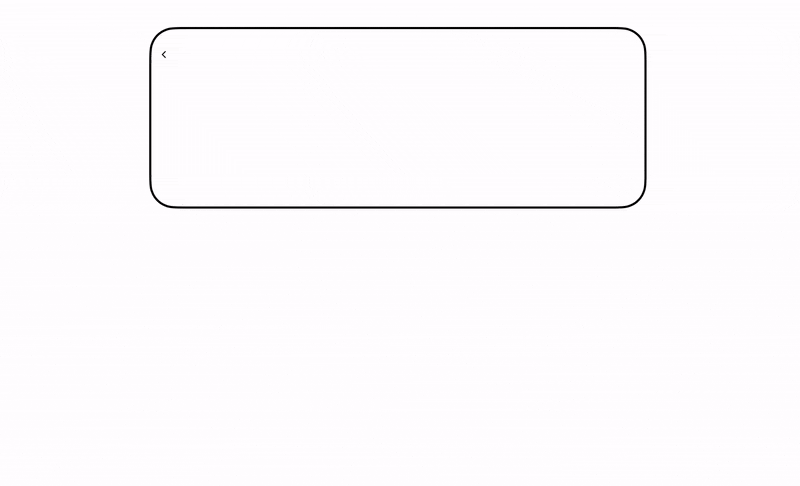
|
Discovering Preference Optimization Algorithms with and for Large Language Models
Chris Lu*, Samuel Holt*, Claudio Fanconi*, Alex J. Chan, Jakob Foerster†, Mihaela van der
Schaar†, Robert Tjarko Lange†
*Equal Contribution, †Equal Advising
arXiv Preprint
AutoRL Workshop @ ICML 2024
|
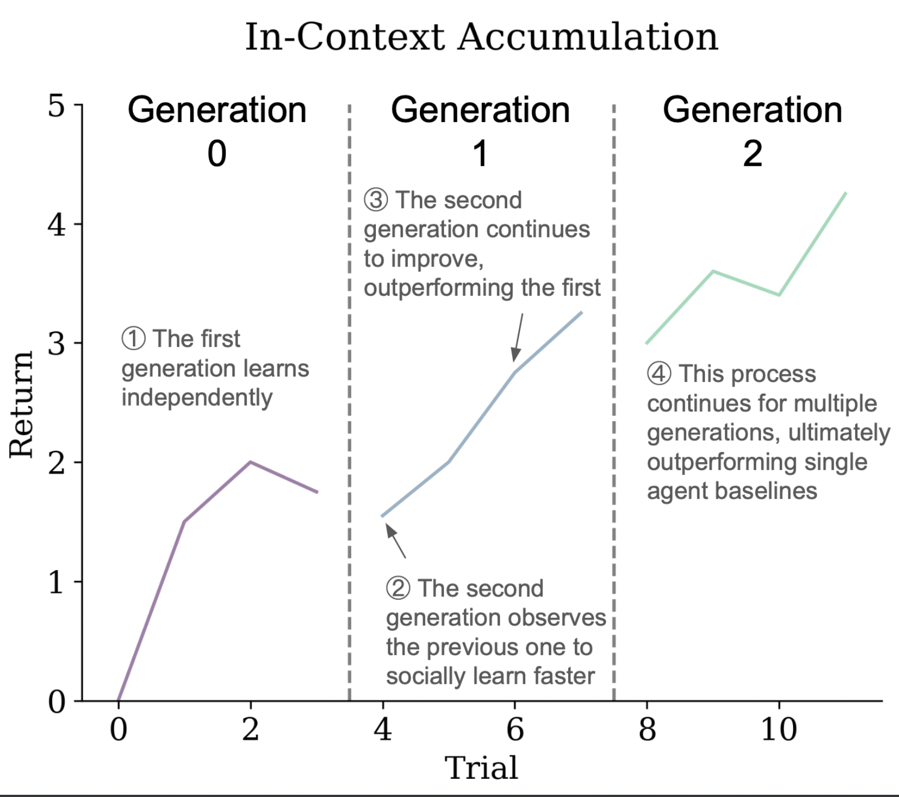 |
Artificial Generational Intelligence: Cultural Accumulation in Reinforcement Learning
Jonathan Cook*, Chris Lu*, Edward Hughes, Joel Z. Leibo, Jakob Foerster
*Equal Contribution
arXiv Preprint
|
|
Can Learned Optimization Make Reinforcement Learning Less Difficult?
Alexander David Goldie, Chris Lu, Matthew Thomas Jackson, Shimon Whiteson, Jakob Foerster
AutoRL Workshop @ ICML 2024 (Spotlight)
|
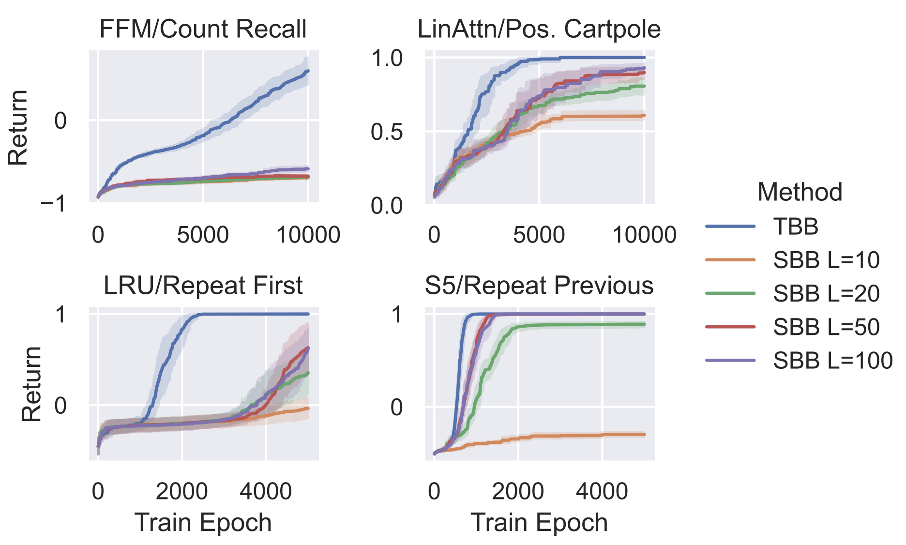 |
Revisiting Recurrent Reinforcement Learning with Memory Monoids
Steven Morad, Chris Lu, Ryan Kortvelesy, Stephan Liwicki, Jakob Foerster, Amanda Prorok
arXiv Preprint
|
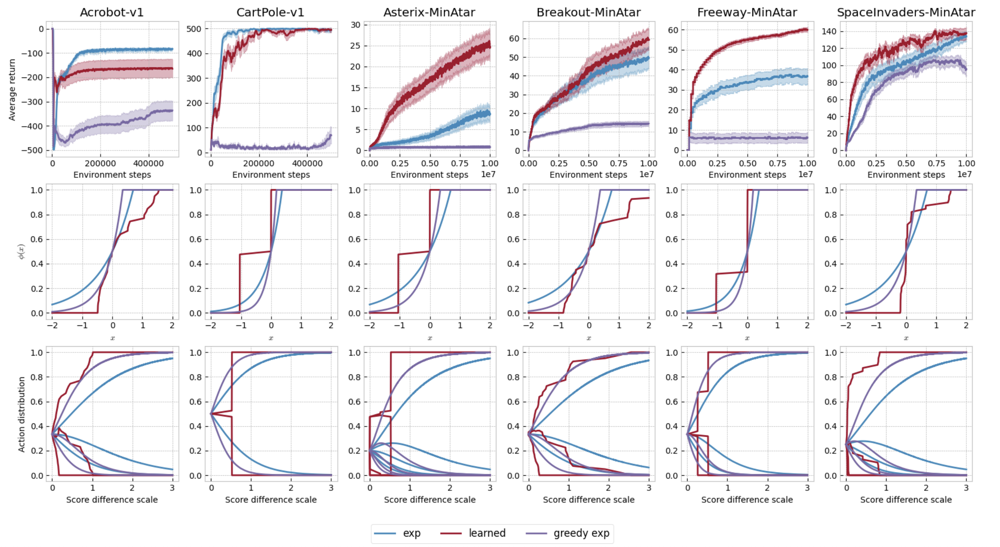 |
Meta-learning the Mirror Map in Policy Mirror Descent
Carlo Alfano, Sebastian Towers, Silvia Sapora, Chris Lu, Patrick Rebeschini
arXiv Preprint
AutoRL Workshop @ ICML 2024
|
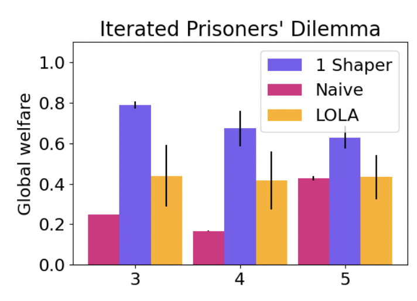 |
Leading the Pack: N-player Opponent Shaping
Alexandra Souly, Timon Willi, Akbir Khan, Robert Kirk, Chris Lu, Edward Grefenstette, Tim
Rocktäschel
Multi-Agent Security Workshop @ NeurIPS 2023 (Oral)
|
|
Misc
- Reviewer for: NeurIPS 2021, ICLR 2022, IROS 2022, NeurIPS 2022, NeurIPS 2023 (Top
Reviewer), ICLR 2024, ICML 2024, ALOE@ICLR2022, DARL@ICML2022, AI4ABM@ICML2022,
F4LCD@ICML2023, ALOE@NeurIPS 2023, AutoRL@ICML2024
- In my free time I like to work on side projects. I used to sell kalimbas. I
also solo-developed and sold a video
game.
- I also created the Noisy TV environment that appears in a few highly-cited papers on
curiosity-driven learning. The code is here.
- If you want to see some of my older works and projects, my old website is here.
|
|
{kind=link}
{kind=link}
{kind=link}
{kind=link}
{kind=link}
{kind=link}
{kind=link}
{kind=link}
{kind=link}
{kind=link}
{kind=link}
{kind=link}
{kind=link}
{kind=link}
{kind=link}
{kind=link}
{kind=link}
{kind=link}
{kind=link}
{kind=link}
{kind=link}
{kind=link}
{kind=link}